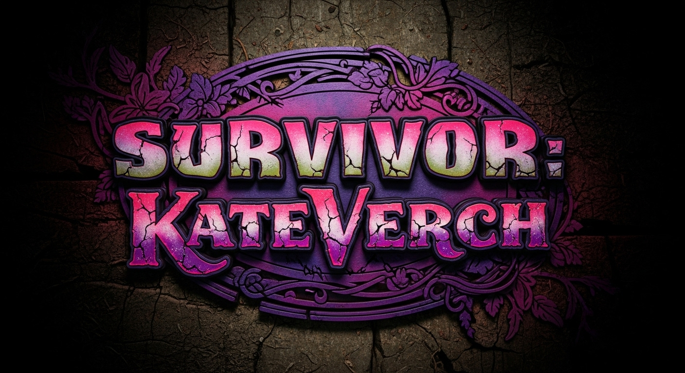

Sole Survivor
Preparation
THE HANDBOOK
Day 1
Marooned
Day 2
First Vote
Day 13
Tribe Swap
Day 24
The Merge
Day 35
Loved Ones
Day 41
Final 4
Day 42
Sole SURVIVOR
PRE GAME STRATEGIES
META GAME
SURVIVOR NOTEBOOKLM ↗
OUTWIT
The Social Game
OUTPLAY
The Physical Game
OUTLAST
The Mental Game
END GAME
Player Portfolios
Player 1
Player 2
Player 3
Player 4
Player 5
Player 6